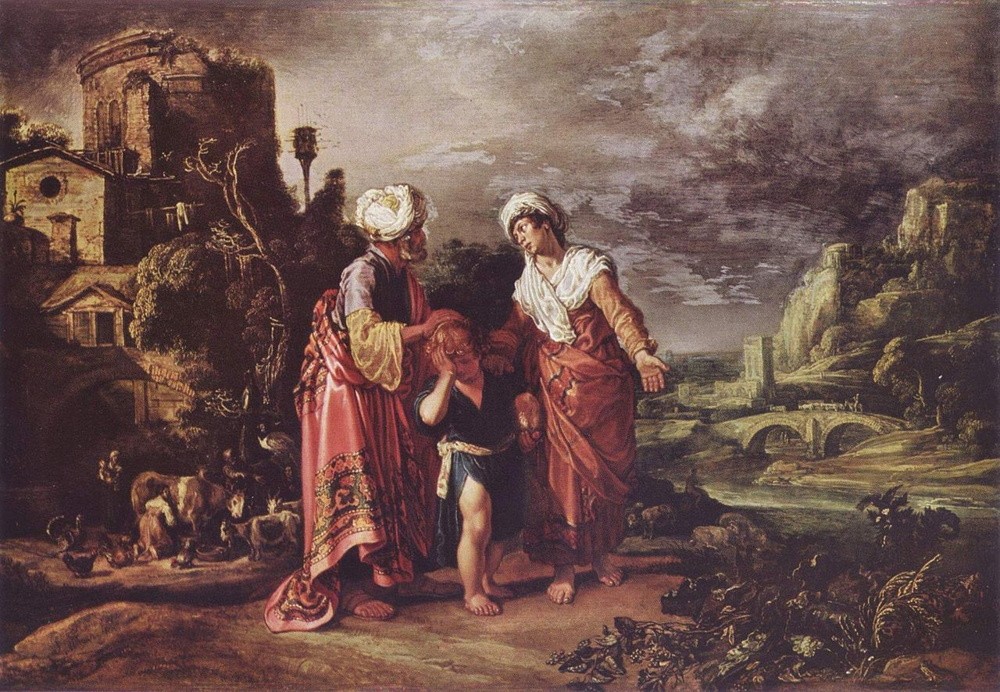
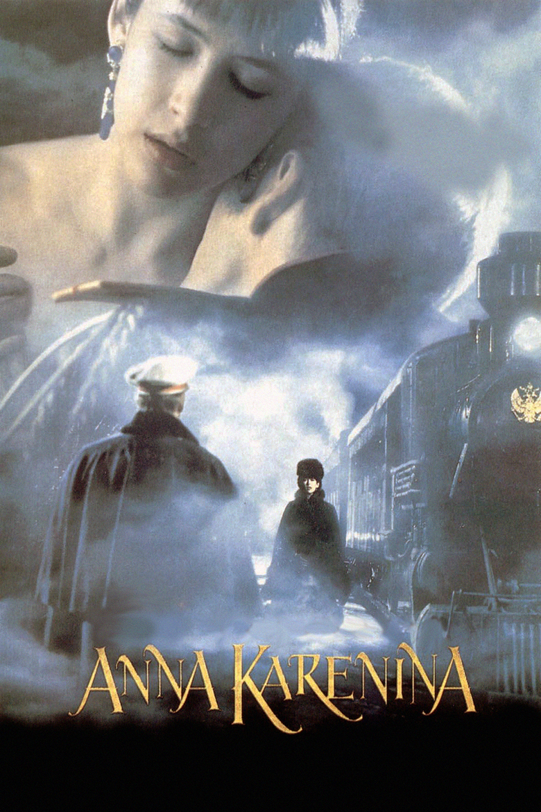
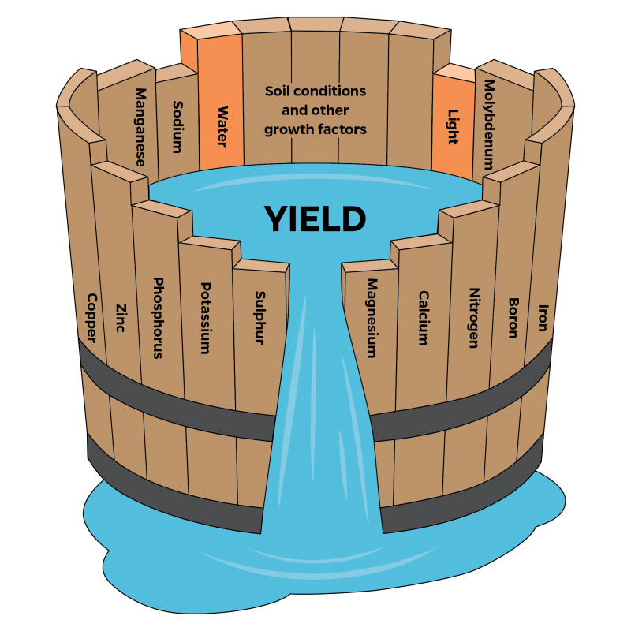
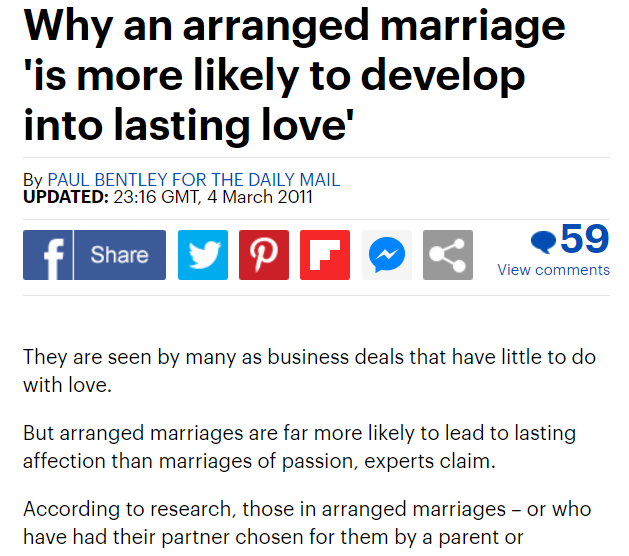
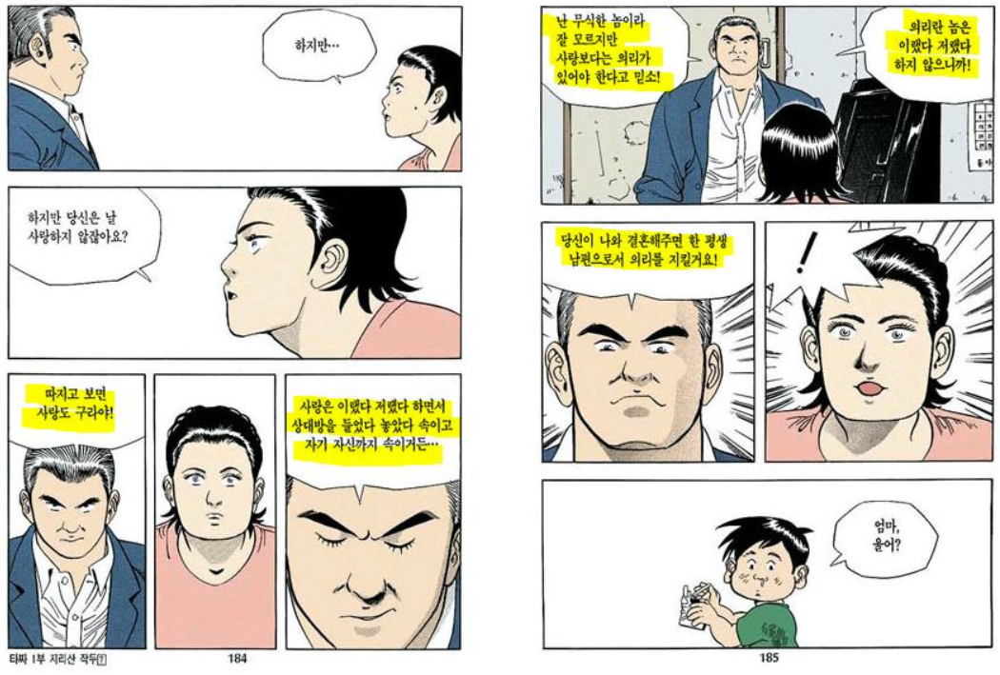

안나 카레니나가 한줄로 말하는 '좋은 결혼 상대'
게시: 2021-03-01T06:30:11+09:00
명작 고전 소설 중 가장 인상적인 첫문장이 어떤 것이냐에 대해서는 항상 왈가왈부 말이 많습니다. 대체로 탑 랭킹에 들어간다고 다들 인정하는 것들 중에는 허먼 멜빌의 모비딕(Moby-Dick)이 대표적으로 들어갑니다. Call me Ishmael. 이 짧은 문장은 정말 영어의 가장 큰 아름다움 중 하나인 간결함의 모든 것을 보여주는 명문입니다. 이 문장의 번역은 대략 '내 이름은 이스마엘이다' 혹은 '날 이스마엘이라고 불러다오' 정도로 할 수 있습니다만, 이 문장 하나만으로도 많은 뜻이 함축되고 독자들의 상상력을 자극하기 때문에 이것이 명문이라고 인정되는 것입니다. 즉 이스마엘이라는 것이 본명일 수도 있지만 아마도 가명일 가능성이 높은데, 그렇다면 왜 굳이 가명을 쓰는 것일까, 이름도 왜 하필이면 이스마엘일까 이스마엘이 성서에서 어떤 의미를 가지는 이름이었더라 등등 여러가지 궁금증을 불러 일으킵니다.

(이스마엘은 아브라함이 부인 사라와의 사이에서 늙도록 자식을 보지 못하자 여종 하갈과 동침하여 낳은 첫아들입니다. 첫아들임에도 불구하고 서자인 관계로, 나중에 정실 부인인 사라가 이삭을 낳자 어머니 하갈과 함께 사막으로 쫓겨나는 비운의 인물이지요. 이스마엘에서 엘(el)은 하나님을 뜻하고 이스마엘이라는 이름의 뜻은 '하나님께서 경청하신다'라는 뜻입니다.) 모비딕의 첫문장은 문학적으로 뛰어나서 유명합니다만, 톨스토이의 '안나 카레리나'의 첫 문장은 통계학이나 사회학 등 여러가지 학문적으로도 매우 유명합니다. All happy families are alike; each unhappy family is unhappy in its own way. 모든 행복한 가족은 다 비슷하다. 그러나 불행한 가족은 다 각자 나름대로의 방식대로 불행하다.

(제가 기억하는 안나 카레니나는 그냥 소피 마르소 주연의 안나 카레니나 뿐입니다. 저는 저 소설 안나 카레니나 안 읽었거든요. 참고로 저기서 등짝만 보이는 저 안나의 불륜 상대는 Sharpe 역과 보로미르 역을 맡았던 숀 빈(Sean Bean)입니다.)
여러분들은 이 문장에 동의하십니까 ? 저는 상당히 말이 되는 이야기라고 생각합니다. 많은 학자들도 이 문장에 큰 의미를 부여합니다. 어떻게 생각해보면 당연히 말이 되는 이야기입니다. 19세기의 독일 식물학자 리비히(Justus von Liebig)가 발표한 식물 생장을 위한 최소량의 법칙(Liebig’s Law of Minimum)을 중고등학교 때 배우셨을 것입니다. 식물의 생장에는 여러가지 요소, 가령 질소와 인, 칼슘과 마그네슘 등 여러가지가 있어야 하는데, 식물의 성장은 그 중 어떤 요소가 가장 많으냐에 달려 있는 것이 아니라 그 중 어떤 요소가 가장 결핍되어 있느냐에 달려 있다는 것입니다. 그것은 아래 그림을 보시면 한 눈에 이해가 됩니다. 이러한 점은 제레미 다이아몬드의 명저 '총, 균, 쇠'에서 인간이 가축화하는데 성공한 동물과 성공화하지 못한 동물의 차이점을 설명하면서 저 안나 카레리나'의 첫 문장을 인용하면서 더욱 유명해졌습니다.

가정의 행복도 마찬가지입니다. 가정이 행복하려면 여러가지 조건이 충족되어야 합니다. 가령 가족들의 건강, 궁핍하지 않은 금전 상황, 배우자 간에 불륜이 없어야 한다는 점, 자녀 교육에 대한 가치관이 비슷해야 한다는 점, 종교적 갈등이 없어야 한다는 점 등등 많지요. 그런 많은 조건들을 다 충족시키는 가정은 결국 다 비슷비슷하게 보일 수 밖에 없습니다. 반면에 그 많은 조건 중 어느 한두 가지가 부족한 가정은 불행해지는데, 그 부족한 점이 다 제각각이다보니 '불행한 가족은 다 각자 나름대로의 방식대로 불행하다'는 말이 나오게 되는 것입니다. 그런데 안나 카레니나의 첫 문장은 '연애 상대와 결혼 상대는 다르다'는 말과도 일맥상통합니다. 보통 연애를 할 때 남자든 여자든 상대의 어떤 뛰어난 점 한두 가지에 끌리는 경우가 많습니다. 그것이 외모이건 유머 감각이건 지적 능력이건 선량한 성품이건 뭐든 간에요. 하지만 그건 어디까지나 연애할 때의 이야기입니다. 일주일에 몇 번 하루 몇 시간씩 함께 놀 때가 아니라, 돈을 벌고 모으고 먹고 자고 청소하고 빨래하는 일상 생활을 같이 하자면 '어떤 한두 가지가 뛰어난 사람'보다는 '결점이 별로 없는 사람'이 더 낫습니다. 그렇게 결점이 별로 없는 사람은 모범적이지만 강렬한 개성이 없고 다 비슷비슷하게 좀 따분한 사람처럼 보이는 경우가 많지요. 그래서 연애 상대와 결혼 상대가 다르다는 말이 나오나 봅니다.
남자건 여자건, 남자의 경우 치명적인 매력을 가진 '나쁜 남자', 여자의 경우는 '팜므 파탈(femme fatale)'이 이성에게 더 인기라고는 하는데, 결국 그런 나쁜 남자 또는 팜므 파탈은 좋은 남편이나 와이프, 좋은 아빠나 엄마가 되지는 못한다는 이야기도 결국 안나 카레니나 첫 문장과 상관이 있는 이야기인 셈입니다.
결혼을 고민 중인 남녀들이 흔히 아래와 같은 고민을 토로하는 경우가 많습니다.
"그 남자는 다 좋은데 딱 하나, 술을 너무 좋아해."
"그 여자는 내 이상형인데 딱 하나, 나와 종교가 달라."
"그 사람은 너무나 완벽한데 딱 하나, 도박을 해."
이런 것들도 안나 카레니나 첫 문장과 매우 관련이 높은 이야기입니다. 다 좋아봐야 아무 소용이 없고, 그런 상대와 결혼하면 그 딱 하나 문제인 부분 때문에 불행한 결혼 생활이 된다는 이야기지요.

(이 기사의 원문은 여기를 참조하세요.)
보통 이런 쓸데없는 이야기는 영국 학자들과 영국 타블로이드 매체들이 많이 다루는데 역시 영국 매체인 데일리메일(Daily Mail)의 기사 중에 이와 상관있는 것이 있더군요. 이번에는 아예 좀더 나가서, 연애 결혼보다 중매 결혼이 더 나을 수도 있다는 주장입니다. 저도 연애 결혼보다 중매 결혼을 한 부부가 더 잘 산다는 소리는 많이 들었는데, 이젠 영국까지 그런 소리가 전해진 모양입니다. 닥터 엡스타인(Dr. Epstein)이라는 학자의 연구 결과에 따르면 이는 사실입니다. 연애 결혼을 한 커플은 시간이 지날 수록 부부 간의 사랑이 점점 약해지는데 비해, 중매 결혼을 한 커플은 반대로 점점 깊어져서 결혼 10년 차가 되면 2배가 된답니다. 정확하게는 연애 결혼 커플의 애정은 반감기가 18개월이라서, 18개월이 지날 때마다 1/2씩 줄어든답니다. 그래서 3년이 지나면 결혼 당시의 25%만 남게 된다는 것이지요. 흔히들 사랑의 유효 기간은 2~3년이라는 말이 꼭 틀린 말은 아닌 셈입니다. 그에 비해서 중매 결혼은 애초에 애정이 거의 없는 상황에서 결혼을 하다보니 애정이 늘어나면 늘어나지 더 줄어들 수는 없겠지요. 이 기사에 따르면 연애 결혼이 대부분인 서구의 이혼율이 높은 것은 연애 결혼 자체의 위험성 때문이랍니다. 사랑이라는 감정은 기본적으로 맹목적인 것이라서 판단력을 흐리는데다 원래 육욕(lust)과 사랑은 헷갈리기 쉬운 감정이라는 것이지요. 그에 비해서 중매 결혼은 양쪽 집안과 결혼 당사자 남녀를 잘 아는 중매쟁이가 모든 조건을 객관적으로 계산해서 적절한 상대끼리 맺어주기 때문에 결혼 생활 중에 발생할 여러가지 문제들을 사전에 피할 수 있다는 것입니다. 뭐 말이 어느 정도 되는 이야기 같긴 합니다. 결국 안나 카레니나의 첫 문장에서 말하는 행복한 가정을 위한 최소 충족 요건을 다 갖춘 사람들끼리 만나면 결국 행복한 결혼 생활이 나올테니까요. 거기에 덧붙여지는 사실은, 오래 가는 부부 관계는 사랑도 필요하지만 무엇보다 상호 간에 대한 신뢰가 중요하다는 것입니다. 사랑에는 유효 기간이 있어서 결국 점점 줄어들겠지만, 그만큼 신뢰가 늘어나는가에 대한 것이 성공적인 결혼의 열쇠가 된다는 말이겠지요. 그런데 중매 결혼은 상호 집안에 대한 약속(?)이니만큼 애초에 사랑보다는 신뢰를 바탕으로 시작하기 때문에 더 유리한 모양입니다.

(저 개인적으로 허영만 '타짜'의 최고 명장면이라고 생각하는 장면입니다. 타짜 고니가 도박으로 복수를 완수한 뒤, 자신의 아이를 자기도 모르게 낳아서 키우던 화류계 출신의 여자를 찾아가 청혼하는 장면입니다. 고니가 '너를 사랑하지는 않지만 너에 대한 의리는 지키겠다'라는 말을 하는데, 저는 저 의리가 부부간의 신뢰에 해당하는 이야기라고 생각합니다. 하지만 과연 사랑은 없고 신뢰만 있는 결혼에 의미가 있을까요 ? 저는 그런 결혼은 매우 튼튼하지만 전혀 아름답지 않은 동상 같은 것이라고 생각합니다. 의미가 없어요.)
그렇다면 역시 연애 결혼보다는 중매 결혼이 더 좋은 것일까요 ? 글쎄요, 사람들마다 생각은 다르겠습니다만 저는 그렇게 생각하지는 않습니다. 중매 결혼이란 애초에 본말이 전도된 것입니다. 남자든 여자든 결혼이라는 것은 엄청난 위험부담을 가진 일생 일대의 모험이고 굳이 그런 모험에 뛰어들 때는 그럴 이유가 있어야 합니다. 제 개인적인 생각입니다만 그런 모험을 정당화할 유일한 이유는 사랑 뿐입니다. 애초에 사랑이 없다면 굳이 결혼을 할 이유가 없다고 저는 생각합니다. 물론, 제일 좋은 것은 뜨거운 사랑을 할 때도 냉정한 계산은 하는 것입니다. 아무리 상대가 매력적인 이성이라고 하더라도, 도저히 그 상대와는 행복한 가정을 이룰 수 있다는 계산이 나오지 않는다면, 그 상대와는 그냥 연애만 하고 미혼으로 남아 있는 것이 좋습니다. 저는 직장에서 미혼남녀들에게 반농담 반진담으로 '비혼이 답'이라고 항상 이야기하는데, 그게 꼭 농담은 아닌 것이 정말 좋은 상대를 만나 열애에 빠지는 것이 정말 어려운 일이기 때문에 그렇습니다.
그래서 어쩌라는 말이냐고요 ? 당연히 저도 답이 없습니다. 그나마 가장 정답 비슷한 것을 어떤 영화에서 본 것이 있는데, 그걸 적어보겠습니다. 어떤 영화인지는 기억이 안 나고, 그냥 로코 무비였는데, 그나마 조연들끼리 짧게 대화를 나눈 한 10초 정도의 씬이었어요.
(어떤 단촐한 스탠딩-핑거푸드 파티에서 처음 만나는 남자가 여자에게 매력적인 미소와 함께 썸을 시도합니다.)
여자 : 혹시 기혼자세요 ?
남자 : (매력적인 미소를 띠며) 아니요.
여자 : 혹시 마약 하세요 ?
남자 : (매력적인 미소를 띠며) 아니요.
여자 : 혹시 직업이 있으세요 ?
남자 : (매력적인 미소를 띠며) 아니요.
(그러자 여자가 뒤도 돌아보지 않고 돌아서서 다른 자리로 가버립니다.)
세상 모든 미혼남녀가 결혼 상대를 고르실 때 저 여자분처럼 하면 불행한 결혼 생활은 크게 줄어들 것이 확실합니다. 그러나, 사랑은 위대한 것이고 많은 것을 극복하는 놀라움을 보여주는 일이 많습니다. 그리고 불같은 사랑을 한번 하고 번민에 시달리는 것보다는 물처럼 잔잔한 결혼 생활 평생하는 것이 꼭 더 낫다고 할 수도 없습니다. 그래서 인간은 끊임없이 고통에 시달리고 안나 까레니나 같은 명작이 계속 나오나 봅니다.